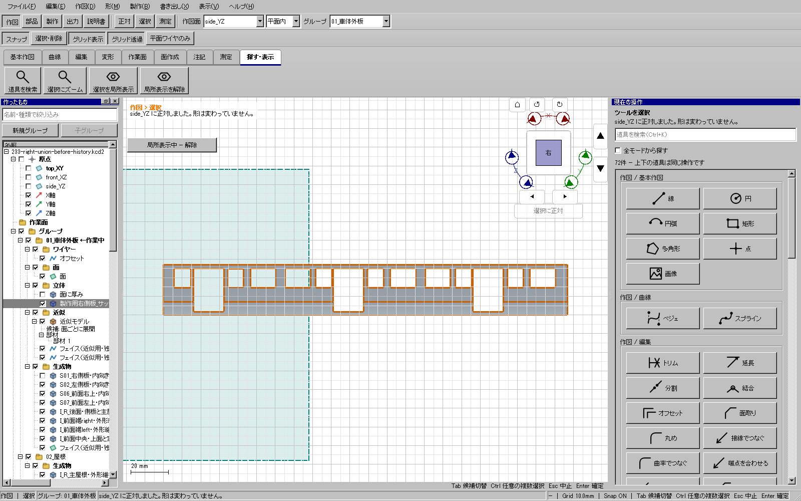

2026-11-09。限定したBoolean核の修正は重点検証済み。全体・配布版検証と公開はこれから行う。 公開更新1のUIで、左側板と穴付きの環を選んで「足す」と、体積矛盾で確定できなかった。
有効な1ソリッドだけを包むコンテナの内部で相対向きが反転していると、native演算が大きい部品を結果から落とす場合があった。 右側で成功した手順を左側へ機械的に適用して完成とは扱わず、同じ保存入力で再現した。 未整理結果も小さい環だけであり、結果整理・演算順序・位置や鏡映・小さなfuzzy値の変更では解決しなかった。
計算へ渡すときだけ、純粋な1子コンテナをたどって同じソリッドを取り出す。 親からの向きと位置を合成し、キャッシュと元の保存表現は書き換えない。 複数の子がある場合は捨てず、既存処理と安全検査へ渡す。新しいUIや専用形状モードは追加しない。
| 実入力の検査 | 結果 |
|---|---|
| 元の側板 | 1744.9032003250131 mm³ |
| 追加する環 | 4.601750371142278 mm³、X=-18〜-17.5 mm |
| 共通体積 | 0.4691927200878501 mm³ |
| 拒否した従来の結果 | 4.60175037114226 mm³。大きい側板を失うため体積検査が正しく拒否。 |
| 修正後の実UI結果 | 1749.035757796095 mm³ |
| 体積保存式との差 | -1.800e-7 mm³ |
| 元の側板の失われた材料 | 0 mm³（native共通形状で照合） |
| 穴の面領域差 | 0 mm² |
| 側板範囲の最大差 | 3.553e-15 mm |
| 右側の以前の成功結果との差 | -9.095e-13 mm³相当。浮動小数の丸め範囲。 |
箱、穴付き板、複数ソリッドを含むコンテナの3回帰を追加。修正前は2件が失敗した。 修正後はBooleanの既存・追加18件が成功した。足す・引く・共通、順序反転、バッチ、剛体変換、鏡映、 穴の内外、入力BRepの不変、STEPを確認。位置付き親コンテナの追加経路も全体ゲートへ含める。
実UI232/233では、失敗時と同じ保存入力を再読込し、通常の選択→足す→保存→Ctrl+Z/Y→独立コピー→STEPを実行した。 元70部品の定義、ID、名前を保持する。結合の元部品が非表示になるのは既存の履歴動作で、元形状の削除とは区別する。 幅36 mmの元車体を再スケールしていない。

全体証拠と公開の確認後に完了を記録する。車体全体の製作モデル、残りの窓枠、全型紙、実際の工作は未完成。
証拠: out/series115-plaboard-20261105/231-container-before.log、
231-container-after.log、234-rim-union-preservation-proof.json。
診断用に作った形状は読み取り専用の比較に使うだけで、納品モデルへ注入しない。